文字の色の見かた
- 赤＝罰・危ないこと
- 青＝法律・しくみ
- 緑＝防ぐ方法・よい行動
- オレンジ＝注意・ポイント
- 紫＝連絡・通報
1廃棄物（ごみ）とは
「廃棄物」とは、かんたんに言うといらなくなって、だれも使わない・売れないもののことです。家の生ごみや粗大ごみ、工場から出る汚れた油、工事で出たがれきなどが当てはまります。
ごみの分け方や、だれが処理するのか、捨てたらどうなるのかは、「廃棄物の処理及び清掃に関する法律」（廃棄物処理法）という法律で決められています。
ひとことで言うと
いらなくなったものは、決められた方法で、決められた人が処理する。これがごみのルールの基本です。
2一般廃棄物と産業廃棄物のちがい
ごみは大きく「一般廃棄物」と「産業廃棄物」の2つに分かれます。いちばん大きなちがいは「だれが処理する責任を持つか」です。
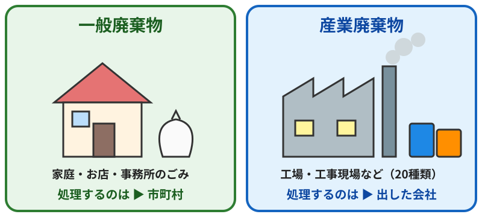
くらべてみよう
| 項目 | 一般廃棄物 | 産業廃棄物 |
|---|---|---|
| どんなごみ？ | 産業廃棄物以外のすべて | 会社の仕事で出た、法律で決められた20種類 |
| 主にどこから？ | 家庭、お店、事務所 | 工場、工事現場、病院など |
| 処理の責任 | 市町村 | ごみを出した会社（排出事業者） |
| 処理業の許可 | 市町村長 | 都道府県知事（政令市は市長） |
| 管理の方法 | 市町村の分別・収集ルール | 伝票（マニフェスト）で行き先を追う |
| 例 | 生ごみ、粗大ごみ、事務所の紙くず | 汚泥、廃油、廃プラスチック、がれき |
特に危ないごみ「特別管理廃棄物」
どちらのごみにも、爆発しやすい・毒がある・病気がうつるおそれがあるなど、特に危ないものがあります。これは「特別管理一般廃棄物」「特別管理産業廃棄物」と呼ばれ、さらに厳しいルールで処理されます（例：病院の注射針、アスベストなど）。
産業廃棄物の20種類
- 🏭どんな会社から出ても産業廃棄物（12種類）燃え殻、汚泥、廃油、廃酸、廃アルカリ、廃プラスチック類、ゴムくず、金属くず、ガラス・コンクリート・陶磁器くず、鉱さい、がれき類、ばいじん
- 🔨決められた業種から出たときだけ（7種類）紙くず、木くず、繊維くず、動植物性残さ、動物系固形不要物、動物のふん尿、動物の死体
- 📦その他（1種類）上の19種類を処理したあとに残るもので、ほかに当てはまらないもの（コンクリートで固めたものなど）
ここがポイント
同じ「紙くず」でも、ふつうの事務所から出れば一般廃棄物、建設業や製紙業などから出れば産業廃棄物になります。「何が」だけでなく「どこから出たか」で分け方が変わります。
マニフェスト（伝票）のしくみ
産業廃棄物は、ごみに伝票（マニフェスト）をつけて、運ぶ業者・処分する業者へ順番に渡します。最後に「ちゃんと処分しました」という報告が、ごみを出した会社へ戻ってきます。途中で行方がわからなくなるのを防ぐしくみです。最近は紙ではなく電子マニフェストも使われています。
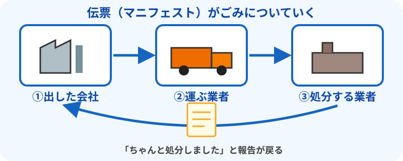
3正しいごみの出し方・処分方法
不法投棄をなくすいちばんの近道は、一人ひとりが正しい方法でごみを処分することです。ここでは、家庭と会社（事業者）に分けて、正しい処分の方法を説明します。
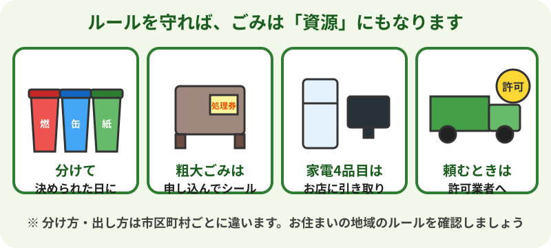
まずは、お住まいの市区町村のルールを確認
ごみの分け方、出す曜日、出せないものは市区町村ごとに違います。市区町村のホームページ、ごみ分別アプリ、配られる「ごみカレンダー」などで確認しましょう。わからないときは、市区町村のごみ担当の窓口に聞くのが確実です。
家庭のごみの処分方法
| ごみの種類 | 正しい処分方法 |
|---|---|
| ふだんのごみ （燃やすごみ・資源ごみなど） | 市区町村のルールどおりに分けて、決められた日の朝に、決められた集積所へ出します。 |
| 粗大ごみ （家具・ふとん・自転車など） | 市区町村の受付センターに申し込み、お店などで処理券（シール）を買って貼り、指定の日に出します。処理施設へ自分で持ち込める地域もあります。 |
| 家電4品目 （エアコン・テレビ・冷蔵庫と冷凍庫・洗濯機と衣類乾燥機） | 粗大ごみには出せません（家電リサイクル法）。 ①買ったお店か、買い替えるお店に引き取りを頼む ②買ったお店がわからないときは、市区町村に相談する ③自分で、郵便局でリサイクル料金を払い、指定された引取場所へ運ぶ ※リサイクル料金と運ぶ料金がかかります。 |
| パソコン | メーカーの回収に申し込みます（「PCリサイクルマーク」付きは、回収料金がかかりません）。国が認めた回収事業者を使う方法もあります。中のデータは自分で消しておきましょう。 |
| スマホ・小型家電 | 市区町村の回収ボックスや、家電店の回収を利用します。 |
| 電池・ モバイルバッテリー | 燃えるごみに入れると、火事の原因になります。家電店などの回収箱や、市区町村の決めた方法で出します。 |
| スプレー缶・ ライター | 中身を使い切ってから、市区町村の決めた方法で出します。 |
| 市区町村で集めないもの （タイヤ・消火器・ガスボンベ・農薬・ピアノなど） | 販売店や、専門の回収ルートに相談します。何に当てはまるかは、市区町村のホームページで確認できます。 |
| 自動車・バイク | 自動車は、都道府県などに登録された引取業者（販売店や解体業者など）へ（自動車リサイクル法）。バイクは、メーカーなどの回収の仕組みを使います。 |
| 庭の草木・落ち葉 | 市区町村のルールに従って出します。庭で燃やす（野焼き）のは、原則禁止です。 |
| 引っ越しなどの 大量のごみ | 市区町村に相談するか、市区町村の許可を持つ業者（一般廃棄物収集運搬業）に頼みます。許可業者の一覧は、市区町村のホームページなどで確認できます。 |
不用品回収業者に頼むときの注意
- 家庭のごみを集めてよいのは、市区町村の許可（一般廃棄物収集運搬業）を持つ業者か、市区町村から委託を受けた業者です。
- 「古物商」や「産業廃棄物」の許可だけでは、家庭のごみは回収できません。
- トラックで回る「無料回収」や、チラシの業者の中には、あとで高い料金を請求したり、集めたものを不法投棄したりするところがあります。
- 頼む前に、許可の有無・料金・会社の連絡先を確認しましょう。
会社（事業者）のごみの処分方法
会社のごみは、ごみを出した会社が自分の責任で処理するのが決まりです（廃棄物処理法 第3条）。お店や事務所から出るごみも、家庭ごみの集積所に出してはいけません。
事業系一般廃棄物（事務所の紙くず、飲食店の生ごみなど）
- 市区町村の許可を持つ業者と契約して、収集してもらいます。
- または、市区町村の処理施設に自分で持ち込みます（多くは有料）。
- 出し方の細かいルールは、市区町村ごとに決められています。
産業廃棄物を正しく処理する7つのステップ
- 分けて、正しく保管する：種類ごとに分け、飛び散ったり流れ出たりしないよう囲いをつけ、保管場所であることを示す掲示板を立てます。
- 許可業者を選ぶ：都道府県（政令市）の許可証を見て、扱えるごみの種類・許可の期限・許可の地域を確認します。
- 書面で契約する：「運ぶ業者」と「処分する業者」のそれぞれと、書面で委託契約を結びます。料金が安すぎる業者には注意しましょう。
- マニフェストを渡す：ごみを渡すときに、マニフェスト（伝票）を交付します。電子マニフェストが便利です。
- 処分が終わったか確認する：業者から戻ってくるマニフェストで、最後まで処分されたことを確認します。決められた期間内に戻ってこないときは、状況を確認し、都道府県などに報告します。
- 記録を保存・報告する：マニフェストや契約書は5年間保存します。紙のマニフェストを使った場合は、年に1回、都道府県などに交付状況を報告します（電子マニフェストは、報告を代わりに行ってくれます）。
- 処理の現場を見に行く：頼んだ業者が適正に処理しているか、実際に確かめることが大切です。
工事のごみはだれの責任？
建設工事で出るごみは、工事を元請けした会社が「ごみを出した会社（排出事業者）」となり、処理の責任を負います。
ここがポイント
業者に任せたら終わり、ではありません。頼んだ業者が不法投棄をした場合、確認を怠った会社も片付けを命じられることがあります。「安いから」ではなく「きちんと処理してくれるか」で選びましょう。
4不法投棄とは
法律ではこう決まっています
廃棄物処理法 第16条：「何人も、みだりに廃棄物を捨ててはならない」
「何人も」とはすべての人という意味です。ふつうの人も、会社も、ごみ処理の業者も、例外はありません。決められた場所・方法以外にごみを捨てることを「不法投棄」といいます。
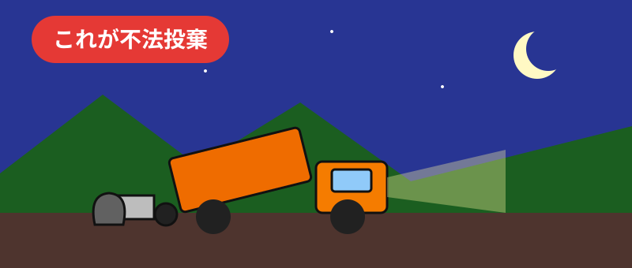
自分の土地でもダメです
山や川、道路、空き地だけでなく、自分の土地や会社の敷地でも、ごみを処理せずに放っておいたり、埋めたりすると不法投棄になることがあります。また、ごみを燃やす「野焼き」（不法焼却）も、一部の例外を除いて禁止されています。
よくある不法投棄の例
- 引っ越しのごみ、家電、タイヤ、自転車を山や空き地に置いていく
- 家の解体で出たがれきや木くずを地面に埋める
- 安い無許可の業者に頼み、その業者が山に捨てる
- エアコン・テレビ・冷蔵庫・洗濯機を、リサイクルせずに捨てる
- ごみ集積所に、収集日やルールを守らずに大量のごみを置く
「無料で回収します」に注意
街を回って「無料回収」とよびかける業者の中には、許可を持たず、集めたものを不法投棄するところもあります。頼むときは、市町村の許可を持っているか確認しましょう。
5不法投棄の罰則
不法投棄は犯罪です。環境に関する法律の中でも、特に重い罰が決められています。
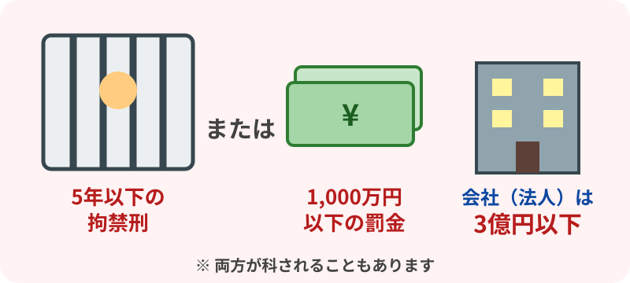
| だれが・何をしたか | 罰則 |
|---|---|
| 不法投棄・野焼きをした人 | 5年以下の拘禁刑 または 1,000万円以下の罰金（両方のことも） 第25条 |
| 捨てようとしたが 途中で終わった（未遂） | 同じく処罰されます 第25条第2項 |
| 捨てるつもりで 集めたり運んだりした | 3年以下の拘禁刑 または 300万円以下の罰金（両方のことも） 第26条 |
| 会社の仕事として 不法投棄をした | 捨てた人が罰せられるうえに、会社にも3億円以下の罰金 第32条（両罰規定） |
「拘禁刑」とは
2025年6月から、法律が変わって「懲役」と「禁錮」が「拘禁刑」という1つの刑にまとめられました。刑務所などに入る刑のことです。
罰金や刑だけではありません
- 片付けの命令：都道府県や市町村から、ごみを取り除いて元に戻すよう命令されます（措置命令）。
- 片付け費用の請求：役所が代わりに片付けた場合、その費用を請求されます。
- 頼んだ会社も責任を問われる：無許可の業者に頼んだり、マニフェストを出さなかったりすると、自分で捨てていなくても片付けを命じられることがあります。
- 許可の取り消し：ごみ処理の業者は、営業の許可を取り消されます。
- 損害賠償：土地の持ち主などから、お金を請求されることがあります。
6不法投棄を防ぐ方法
不法投棄は、「ここは見られている」「ここは手入れされている」と感じる場所では起こりにくくなります。
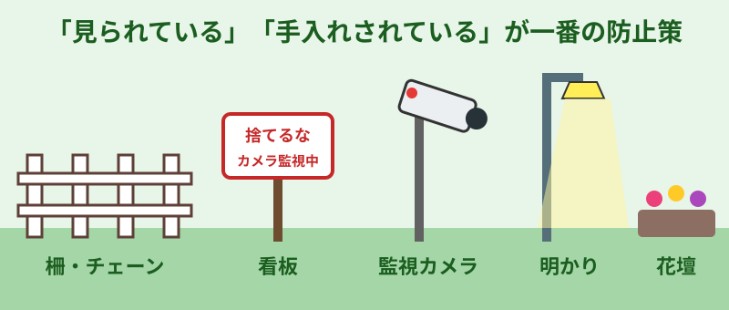
土地の持ち主・地域でできること
- 🚧柵・チェーン空き地や山の入口に柵やチェーンをつけて、車が入れないようにします。
- 🌿草刈り・そうじごみが1つあると、次々に捨てられます。こまめにきれいにしましょう。
- 🪧看板「不法投棄は犯罪です」「カメラで監視中」などの看板を立てます。
- 💡明かり夜に暗い場所は捨てられやすいので、明かりをつけます。
- 📹監視カメラ捨てられやすい場所にカメラをつけます。
- 🌷花壇づくり地域の人で花を植えて手入れすると、捨てにくい場所になります。
しくみ（制度）で防ぐ
| しくみ | 内容 |
|---|---|
| 許可の制度 | ごみを運ぶ・処分する仕事は、許可を持つ業者だけができます。 |
| マニフェスト | 産業廃棄物の行き先を伝票で追います。電子マニフェストならごまかしにくくなります。 |
| 契約書 | ごみを出す会社と処理業者は、書面で契約を結びます。 |
| 出した会社の確認 | 出した会社は、頼んだ先がきちんと処理しているか確認する努力が求められます。 |
| リサイクルの法律 | 家電や自動車には、決められた回収ルートがあります。 |
| 盛土の規制 | 危ない土砂の積み上げ（盛土）を規制する法律があります。 |
知ってもらう・協力する
- ごみの正しい出し方・分け方を知らせる
- 粗大ごみや家電の正しい捨て方を案内する
- 学校で環境について学ぶ
- 役所・警察・海上保安庁・森林管理署などが集まり、連絡協議会で情報を共有する
- 郵便・配送・電気・ガスなど、地域を回る会社と見守りの協定を結ぶ
7捨てられた場所を見つける方法
捨てられやすい場所
- 人目につかない山の中、林道の脇、川原、海岸
- 車で入りやすく、夜は暗い場所
- 手入れされていない空き地、使われていない畑、空き家
- 道路の待避所、橋の下、ガードレールの下の斜面
- すでにごみが捨てられている場所
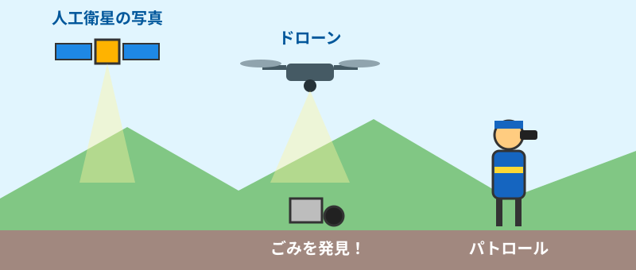
見つける方法
| 方法 | 内容 |
|---|---|
| パトロール | 役所の職員や監視員、地域のボランティアが見回ります。休日や夜・早朝も行います。 |
| 住民からの連絡 | 電話やメール、ホームページの通報フォーム、写真つきの連絡など。 |
| 空からの見回り | ヘリコプターなどで上空から確認します。 |
| ドローン | 人が入りにくい山奥やがけの下も撮影できます。前の写真とくらべて変化を見つけます。 |
| 人工衛星・航空写真 | 昔と今の写真をくらべ、土が盛られた・物が積まれたなどの変化を見つけます。 |
| AI（人工知能） | カメラや空からの写真から、ごみの山を自動で見つけます。 |
| 地図での管理 | 捨てられた場所を地図に記録し、多い場所を重点的に見回ります。 |
こんなときは連絡を（不法投棄のサイン）
- 見慣れないダンプやトラックが何度も出入りしている
- 早朝や夜中にトラックが走っている
- いやなにおいのする土や泥が運び込まれている
- 工事でもないのに、大きな穴が掘られている
- 空き地に、シートでおおわれた山が急にできた
8捨てた人を見つける方法
調べるのは役所と警察です
捨てた人を調べて特定するのは、法律で権限を持つ市町村・都道府県と警察の仕事です。住民のみなさんは、見たこと・気づいたことを連絡することで協力しましょう。自分で犯人を探すのは危険です。
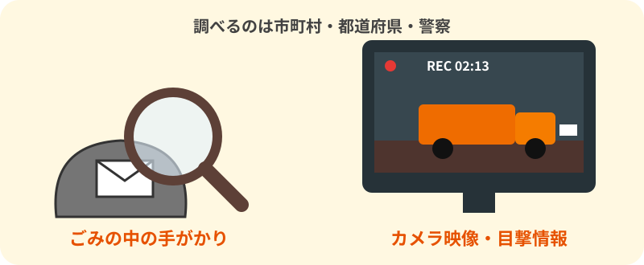
現場での手がかり
- ✉️ごみの中の手がかり郵便物、伝票、レシート、会社名の入った袋などから、ごみを出した人や会社を調べます。
- 🔍ごみの種類を調べる建築材料の種類や製品の番号から、どんな会社・工事から出たかを推測します。
- 📄伝票をたどる産業廃棄物なら、マニフェストや契約書をくらべて、流れのおかしな所を探します。
- 📷記録現場の写真や量を記録し、時間ごとの変化をくらべます。
カメラや目撃情報
- 監視カメラ・防犯カメラ：捨てた瞬間、車の種類、ナンバー、時刻がわかります。
- センサーカメラ：電気のない山の中でも、動くものを感知して撮影します。
- ドライブレコーダー：通りかかった車の映像が役立つことがあります。
- 目撃情報：日時、場所、車の種類・色・ナンバー、人数、ごみの内容。
役所が持つ調査の力
- 報告を求める（第18条）：会社や業者に、ごみの処理について報告させます。
- 立入検査（第19条）：事務所や処理施設、車に入って調べ、帳簿を確認します。
- 聞き取り：土地の持ち主、近所の人、運送業者などから話を聞きます。
警察との協力
- 悪質なもの・大きな事件は、警察が捜査して刑事事件になります。
- 役所に元警察官を置いたり、一緒にパトロールしたりしています。
- 役所から警察へ告発することもあります。
頼んだ人も逃げられません
実際に捨てた人だけでなく、捨てるよう頼んだ人や、無許可の業者に頼んだ会社も責任を問われます。
9不法投棄を見つけたら
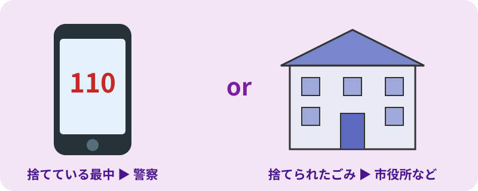
連絡のしかた（3ステップ）
- 安全な場所から記録する：日時、場所（住所・目印・地図アプリの位置）、ごみの種類と量、写真。
- 捨てているところを見たら：車の種類・色・ナンバー、人数、走り去った方向をメモ（むりのない範囲で）。
- 連絡する
- 捨てている最中を見た → 警察（110番）
- 捨てられたごみを見つけた → 市区町村の環境・ごみの担当課、または都道府県の担当窓口
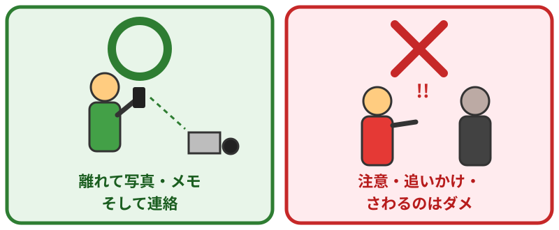
してよいこと
- 離れた安全な場所から、写真を撮ったりメモしたりする
- 市区町村や警察に連絡する
- 土地の持ち主なら、市区町村に相談する
してはいけないこと
- 捨てている人に注意したり、追いかけたりしない（トラブルや危険に巻き込まれるおそれがあります）
- ごみにさわったり、袋を開けたりしない（毒のあるもの、注射針、刃物などがあるかもしれません）
- 勝手に片付けない（手がかりがなくなり、捨てた人を見つけにくくなります。片付けたい場合は、まず市区町村に相談しましょう）
- SNSに個人の情報をのせない（ごみの中の名前や住所、車のナンバー、人の顔などを公開すると、名誉毀損やプライバシーの侵害になるおそれがあります。情報は役所や警察に伝えましょう）
10捨てられたあとの片付け
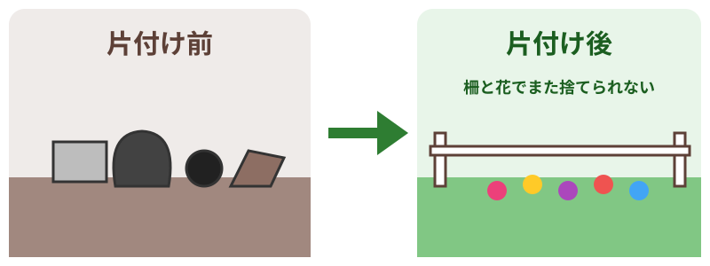
| 場合 | どうなる？ |
|---|---|
| 捨てた人がわかった | 捨てた人（と、関わった会社など）に、片付けと元に戻すことを命令します。 |
| 捨てた人がわからない お金がない | 土地の持ち主が片付けるか、役所が代わりに片付けます（行政代執行）。 |
| 大量の産業廃棄物 | 都道府県などが取り除く工事を行い、国や基金が費用を支援するしくみがあります。 |
| 片付けたあと | 柵・看板・カメラをつけ、見回りを増やして、また捨てられないようにします。 |
土地の持ち主の方へ
自分の土地に捨てられたときも、そのままにすると、まわりの環境が悪くなり、さらに捨てられてしまいます。まずは市区町村に相談し、また捨てられないための対策をしましょう。
11関係する法律・参考情報
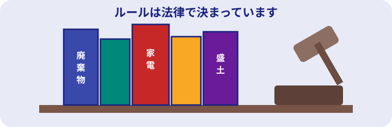
主な法律
- 廃棄物の処理及び清掃に関する法律（廃棄物処理法）
- 特定家庭用機器再商品化法（家電リサイクル法）
- 使用済自動車の再資源化等に関する法律（自動車リサイクル法）
- 宅地造成及び特定盛土等規制法（盛土規制法）
- 各市町村・都道府県の条例（ポイ捨て禁止条例など）
参考になるサイト
- e-Gov法令検索（法律の原文を読めます）
- 環境省：廃棄物・リサイクル対策
- 日本産業廃棄物処理振興センター（電子マニフェスト）
- お住まいの都道府県・市区町村の「不法投棄」のページ
★おわりに
不法投棄は、土や地下水の汚れ、景色の悪化、火事、いやなにおいなど、地域に長く大きな被害をもたらします。片付けの費用は、最後にはわたしたちの税金や土地の持ち主の負担になります。
「捨てない」「捨てさせない」「見逃さない」
一人ひとりの行動が、きれいな環境を守ります。
ご利用にあたって
このサイトは一般的な内容をまとめたものです。具体的なことは法律の専門家にご相談ください。この掲載内容を利用して損害等の不利益を負ったとしても、運営者・作成者は一切責任を負いません。くわしくは免責事項をご覧ください。
最終更新：2026年10月24日